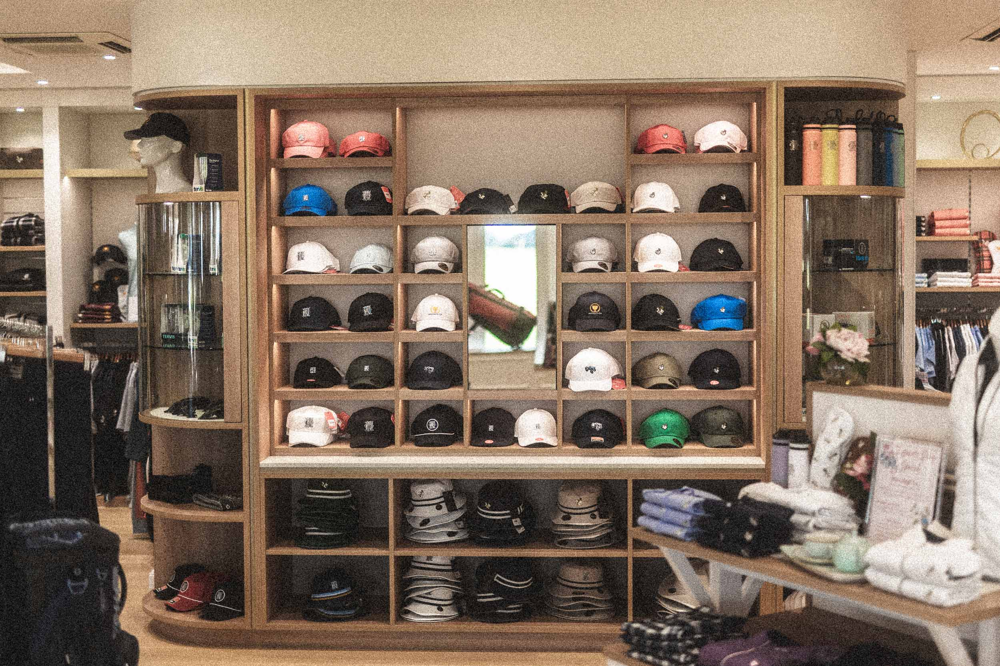

There’s a phrase that gets used in golf clubs more than any other workplace on earth: “We’ve always done it this way.”
It’s said with the quiet authority of tradition — which, in golf, carries roughly the same weight as divine commandment. And sometimes the tradition is justified. There are good reasons to maintain dress codes, uphold etiquette, and honour the culture that makes a club worth joining. Nobody’s arguing with that.
But somewhere along the way, “we’ve always done it this way” stopped being a defence of tradition and started being used to justify processes that are, frankly, indefensible. Not because anyone designed them to be bad — but because they were designed for a different era, the era passed, and nobody stopped to ask whether the process should pass with it.
We spent time with clubs across Australia, the UK, and beyond, documenting the most common legacy processes that persist purely through inertia. What we found isn’t a story of incompetence. It’s a story of compound neglect — small inefficiencies, each too minor to fix on its own, that add up to a staggering annual cost in staff time, lost revenue, and quiet member frustration.
Here are the ones we see most often.
The visitor booking chain
At premium private clubs, a single visitor booking commonly involves seven or more discrete steps: a visitor emails or calls the club; staff manually verify the visitor’s credentials; staff cross-reference the tee sheet for availability; a back-and-forth email exchange confirms dates and times; payment details are taken manually; a confirmation is sent; and on the day, everything gets re-verified at check-in.
Each booking takes 15–30 minutes of staff time. For a club processing 400 visitor bookings a year, you’re looking at 100–200 hours of staff time consumed by a single administrative process.
At a loaded hourly rate of $50 for an experienced admin, that’s $5,000–$10,000 per year on visitor bookings alone. For busier clubs — particularly those on international destination lists — the number can be significantly higher. One premium Australian club estimated they were losing 850+ hours annually across all booking-related administration.
The bitter irony is that every step in this chain exists because someone, at some point, correctly identified a need. The problem isn’t the objectives — it’s that the process was built for a world of fax machines, phone calls, and posted letters, and nobody rebuilt it when the world moved on.
Modern visitor booking systems can compress this entire chain to 2–5 minutes per booking, with automated verification, digital payment capture, and tee sheet integration — without removing the club’s right to approve or deny every request.
The spreadsheet tax
If you asked most club administrators to list every spreadsheet their team maintains, they’d need a while. There’s the one for tracking F&B revenue that doesn’t sync with the tee sheet system. There’s the one for competition entries. There’s the one for staff rostering. The one for maintenance schedules. The one that reconciles payments between two systems that should integrate but don’t.
Spreadsheets aren’t inherently bad. They’re the universal safety net for when software fails to deliver. But every spreadsheet represents a gap in your primary systems — a place where data has to be manually exported from one platform, manipulated, and either imported into another or maintained in parallel.
We asked administrators at a dozen clubs to estimate how much time their teams spent maintaining supplementary spreadsheets each week. The answers ranged from 4 to 12 hours. Call it an average of 6 hours per week. That’s 312 hours per year — roughly eight working weeks — spent not on managing the club, but on working around the limitations of the club’s software.
And that’s just the time cost. The real danger of spreadsheets is error propagation. One club told us about a end-of-year financial discrepancy that took 40 hours to trace back to a single copy-paste error in a reconciliation spreadsheet maintained by a staff member who’d since left.
Every spreadsheet in your operation is a symptom. The question worth asking isn’t “how do we maintain these spreadsheets better?” — it’s “why do they exist at all?”
The phone call bottleneck
Here’s a number that should surprise nobody who’s worked in a pro shop: a significant proportion of tee time bookings at most clubs still happen over the phone. At some clubs, it’s the majority.
This isn’t because members and visitors prefer calling. It’s because the online booking experience at many clubs is poor enough that calling feels easier. When the web interface is clunky, when availability isn’t updated in real time, when the booking flow requires more clicks than ordering from a restaurant, people default to picking up the phone.
Every phone booking is an interruption. If a typical phone booking takes 3–5 minutes and your club handles 30 phone bookings per day during peak periods, that’s 90–150 minutes of staff time daily consumed by a task that shouldn’t require human involvement.
A club we spoke with surveyed their members and found that 41% had abandoned the online booking system and reverted to calling the pro shop. When asked why, the answers were consistent: the system was too slow, availability wasn’t accurate, or the process was too complicated. The members weren’t technophobic. The technology was simply failing them.
Flat-rate pricing
This one’s a revenue problem rather than an efficiency problem, but it belongs in this list because the root cause is identical: it’s always been done this way.
Most golf clubs price their tee times on a static rate card. Weekend morning: $X. Weekday afternoon: $Y. Twilight: $Z. The rates might get reviewed annually, but on any given day, every slot in the same category costs the same regardless of demand.
Think about what that means in practice. A 7:30am Saturday tee time in perfect autumn weather, booked out weeks in advance, costs the same as a 7:30am Saturday tee time in driving rain with three open slots.
Airlines abandoned this model decades ago. Hotels followed. Restaurants are increasingly using demand-based pricing for reservations. Golf is one of the last service industries where premium inventory is routinely sold at the same price as off-peak inventory.
Clubs that have implemented even basic dynamic pricing consistently report revenue increases of 10–20% on green fee income. For a club generating $500,000 in annual green fee revenue, that’s $50,000–$100,000 in additional income from the same number of rounds, with zero additional cost to deliver.
The membership renewal marathon
At many private clubs, the annual membership renewal process is still a remarkably manual affair. Renewal letters get drafted, printed, and posted. Members respond by mail, email, or phone — or don’t respond at all, triggering a round of follow-up calls. Payments are processed individually, often through a mix of bank transfers, cheques, and credit card details read over the phone.
One club administrator told us that processing renewals for their 600-odd members takes their two-person admin team approximately three weeks of focused work each year. That’s roughly 240 hours for a process that, in a modern system with automated reminders, online self-service renewal, and integrated payment processing, should take days rather than weeks.
The hidden cost here isn’t just time. It’s cash flow delay. Every day between sending a renewal notice and receiving payment is a day the club doesn’t have that money. For clubs with 500+ members paying annual dues of $5,000–$50,000 each, even a two-week improvement in average collection time represents a meaningful cash flow benefit.
The communication default
Ask most clubs how they communicate with their members and you’ll hear some combination of: a monthly email newsletter, occasional one-off emails for events and announcements, a noticeboard in the clubhouse, and word-of-mouth through the pro shop.
That’s not a communication strategy. It’s a set of habits.
The cost of underdeveloped member communication isn’t as easy to quantify as the other items on this list, but it’s arguably more damaging over time. Poor communication drives low event attendance, preventable support queries, member disengagement and, eventually, non-renewal — the most expensive outcome of all, because replacing a departed member costs far more than retaining one.
The clubs that communicate well — personalised, timely, relevant messages through the channels members actually use — consistently report higher event participation, fewer inbound enquiries, and stronger renewal rates.
The compound effect
None of the processes described above are dramatic failures. No single one would cause a crisis if left unchanged for another year. That’s precisely why they persist — each is just tolerable enough, on its own, to avoid triggering action.
But they don’t exist on their own. They compound.
The club paying $10,000 in staff time for manual visitor bookings is also paying $15,000 for spreadsheet workarounds, leaving $50,000 on the table through static pricing, spending 240 hours on membership renewals, losing hundreds of hours to phone booking bottlenecks, and underperforming on member retention because their communications are an afterthought.
Add those up and you’re looking at a conservative estimate of $80,000–$150,000 per year in combined cost for a mid-sized private club. That’s not the cost of bad management. It’s the cost of good management trapped in bad processes.
How to start
If this article has felt uncomfortably familiar, the good news is that you don’t need to fix everything at once. The clubs that successfully modernise their operations almost always start with a single high-impact process and build from there.
Pick the process with the highest pain-to-effort ratio. Which legacy process costs the most time, frustrates the most people, or leaves the most revenue on the table relative to the effort required to fix it?
Measure before you change. Spend a fortnight tracking the real time cost of your current process. These numbers are your baseline — and your business case for change.
Start with something that sits alongside, not something that replaces. The easiest wins come from tools that complement your existing systems rather than requiring a wholesale platform swap.
Set a review date. Put a quarterly review in the calendar — thirty minutes to ask, “Which of our processes still exist purely because we’ve always done them this way?” That single habit, maintained consistently, will do more for your operational efficiency than any software purchase.
The real tradition worth protecting
Golf clubs exist to provide their members with an exceptional experience — on the course, in the clubhouse, and in every interaction with the club. The traditions that make golf special are worth protecting fiercely.
But an email chain that takes 30 minutes to confirm a visitor booking isn’t a tradition. A spreadsheet that reconciles two systems that should already be talking to each other isn’t heritage. A rate card that hasn’t been rethought in five years isn’t culture.
These are processes that outlived their context. They cost more than most clubs realise. And the only thing keeping them alive is a sentence that should raise an eyebrow every time it’s uttered in a committee meeting: “We’ve always done it this way.”